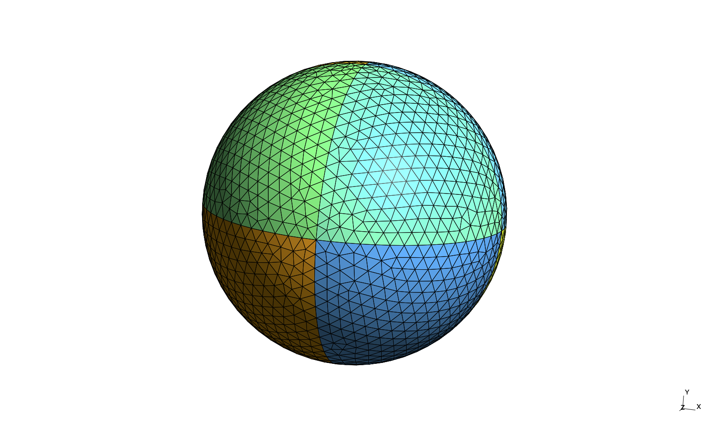
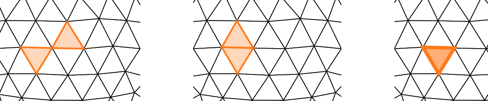

Discretising boundary integral operators
Contents
Discretising boundary integral operators#
In this section we discuss the discretisation of boundary integral operators. We will start with a short discussion on numerical quadrature, then talk about linear solvers and finally go into details of computational aspects.
We will focus on Galerkin discretisations of boundary integral operators of the form
for a closed surface \(\Gamma\subset\mathbb{R}^3\). We assume that \(\Gamma\) has been discretised into a triangular surface mesh \(\Gamma_h\) formed of \(N_h\) flat triangles \(\tau_j\subset\mathbb{R}^3\), \(j=1,\dots N_h\). The parameter \(h\) is a size measure for the triangulation, e.g. the maximum diameter of the triangles.
See below for the example of a triangulation of the unit sphere.

Integrating weakly singular kernels over a pair of triangles#
Let \(\tau_i\) and \(\tau_j\) be two triangles. We want to evaluate the integral
We need to distinguish two different cases, namely that the distance of \(\tau_i\) and \(\tau_j\) is larger zero and that the two triangles are adjacent (or even identical).
Before we discuss the quadrature rules for these cases we want to introduce a parameterization by a reference triangle.
Parameterization through a reference triangle#
Let the physical triangle by defined by the three vertices \(v_0, v_1, v_2\in\mathbb{R}^3\).
We introduce the reference triangle \(\tau_R\subset\mathbb{R}^2\) defined by the corner points \((0, 0)\), \((1, 0)\), \((0, 1)\). Let \(x\in\mathbb{R}^3\) be our physical variable and \(\tilde{x}\in\mathbb{R}^2\) the corresponding variable in reference space.
We introduce the reference map \(x = v(\tilde{x})\) defined by
with \(J:=\begin{bmatrix}v_1 - v_0 & v_2 - v_0\end{bmatrix}\) the Jacobian of the map.
For a function \(f\) defined in physical space we have that \(\tilde{f}(\tilde{x}) = f(v(\tilde{x}))\) is the same function parameterized over reference space. We can also express the gradient \(\nabla_x f\) in physical space through the gradient in reference space. Applying the chain rule gives
Transposing gives $\( \nabla_{\tilde{x}}f(\tilde{x}) = J^T\nabla_x f(x). \)$
To obtain an expression for \(\nabla_x f(x)\) we need to use a little bit of linear algebra. Let \(J = U\Sigma V^T\) be the Singular Value Decomposition of \(J\) with \(U\in\mathbb{R}^{3\times 3}\), \(V\in\mathbb{R}^{2\times 2}\), \(\Sigma\in\mathbb{R}{3\times 2}\). \(U\) and \(V\) are orthogonal, that is \(U^TU = I\) and \(V^TV = I\). The matrix \(\Sigma\) is diagonal with diagonal values \(\sigma_1\geq\sigma_2 \geq 0\). The first two columns of \(U\) form the range of \(J\).
We define the pseudo-inverse of \(J^T\) as
Applying the pseudo-inverse gives
With a bit of matrix multiplication we obtain that
with \(I_2\) being the \(2\times 2\) identity matrix. We see that \(\left[J^T\right]^{\dagger}J^T\) projects onto the range of \(J\), which are all vectors tangential to the physical triangle. Any component orthogonal to those tangents is projected out. Hence, the expression \(\left[J^T\right]^{\dagger}\nabla_{\tilde{x}}f(\tilde{x})\) gives us the tangential derivative in physical space. This is intuitively clear since we parameterize on the surface of the reference triangle. So we cannot represent derivative information orthogonal to it.
We now parameterize the integral \(\mu_{i, j}\) through the reference element as
The functions \(v_i\) and \(v_j\) are the maps from the reference element to the triangles \(\tau_i\) and \(\tau_j\). The factors \(\omega_i\) and \(\omega_j\) are the integration elements given by \(\omega = \|j_1\times j_2\|_2\), where \(j_1\) and \(j_2\) are the columns of the Jacobian \(J\).
Non-adjacent triangles#
We now need to evaluate the integral over the reference triangles. The straight forward case occurs when the triangles \(\tau_i\) and \(\tau_j\) are non-adjacent. Then the kernel function \(g\) is smooth throughout the domain of integration and we can use any quadrature rule for smooth integrals. Popular quadrature rules are for example the symmetric Gauss triangle rules.
Let a quadrature rule over the reference triangle be defined by the quadrature points \(\tilde{q}_\ell\in\tau_R\) and associated quadrature weights \(\beta_{\ell}\). We have
Adjacent triangles#
The more difficult case occurs if triangles are either vertex adjacent, edge adjacent or identical.

In these cases we integrate over the singularities of the kernel function. There are a number of techniques to solve this problem and we will not go into technical details here.
A popular choice is the fully numerical quadrature rule by Erichsen and Sauter [1998]. It uses different types of quadrature point distribution depending on whether we are in the vertex, edge, or identical case.
The advantage of this rule is that it is fully independent of the kernel, can be used on higher-order elements, arbitrary types of basis functions and the implementation can make use of modern CPU vectorization techniques. However, the number of quadrature points required is rather high. But since the number of singular integration pairs only scales linearly with the overall number of triangles this is not of much concern.
An alternative are semi-analytical quadrature rules. There are different families of these rules for different types of problems. They partially integrate the integral analytically and combine with a numerical rule for a remaining kernel that is less singular. They are very efficient. However, the implementation requires the use of special functions, which can be computationally inefficient on modern vectorized CPU architectures.